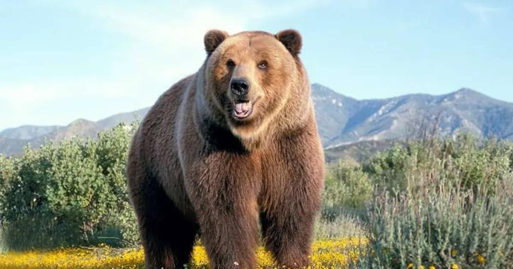

БУРИЙ ВЕДМІДЬ

Зовнішній вигляд
Вигляд бурого ведмедя є типовим для ведмедів узагалі. У нього міцний кремезний тулуб із високою холкою, масивна голова з невеликими вухами та очима. Хвіст короткий (6,5—21 см), часто повністю прихований у шерсті. Лапи міцні, з великими невтяжними кігтями довжиною 8—15 сантиметрів, п'ятипалі, стопоходячі. Шерсть густа, зазвичай забарвлена рівномірно або з деяким потемнінням основного кольору на морді та лапах.
Забарвлення бурого ведмедя загалом варіює у широкому діапазоні: від світло-палевого до майже чорного; але найзвичайнішою є буро-коричнева форма. У грізлі зі Скелястих гір (США) шерсть на спині може бути світлішою на кінцях, створюючи враження сірого або сивого відтінку. Цілком сивувато-сіре забарвлення характерне для бурих ведмедів в Гімалаях та на Тянь-Шані, а рудувате — на території Сирії. У ведмежат на шиї та грудях бувають світлі відмітини, котрі з віком зникають.
Бурий ведмідь утворює кілька підвидів (географічних рас), що відрізняються розмірами і забарвленням. Найдрібніші особини водяться в Європі, найбільші — на Алясці, а також на Далекому Сході Росії (в Уссурійському краї та на Камчатці) — вони важать 500 і більше кг; були гіганти вагою 700—1000 кг. Максимальна зафіксована вага самця камчатського ведмедя становила 600 кг, середня — 350—450 кг. Є відомості про те, що в осінній період вага особливо великих камчатських особин перевищує 700 кг. Найбільший ведмідь, спійманий на острові Кадьяк для Берлінського зоопарку, важив 1134 кг. Середня вага бурого ведмедя 200—250 кілограмів. Довжина європейського бурого ведмедя зазвичай 1,2-2 м при висоті в холці близько 1 м і масі від 100 до 400 кг; грізлі помітно більше — деякі особини, ставши на задні лапи, досягають зросту 2,8-3 м; ведмеді, що живуть у Сибіру, важать 400—600 кг. Дорослі самці в середньому в 1,6 рази більші за самок.
Розповсюдження та чисельність
В історичні часи бурий ведмідь був звичайним звіром на всій території Європи, включаючи Велику Британію та Ірландію, у північній Африці (Атлаські гори), в Азії його суцільний ареал покривав всю лісову зону (північ, Сибір), гірські масиви включно до Гімалаїв, північний Китай та Японію. В Північній Америці цей вид мешкав в західній частині континенту від Аляски до півночі Мексики.
Зараз бурий ведмідь на частині історичного ареалу знищений, а в решті місць його чисельність дуже скоротилась. В Західній Європі ізольовані популяції існують у Піренеях, Кантабрійських горах, Альпах, Апеннінах. Є досить звичайним на Скандинавському півострові та в Фінляндії, в невеликій кількості зустрічається в Центральній Європі (переважно в гірських районах), на Балканському півострові та в азійській частині Туреччини. У Східній Європі та Сибіру ареал бурого ведмедя йде суцільною смугою від заходу Росії до Камчатки; окремі популяції існують в Центральній Азії, на Кавказі та Закавказзі, Близькому Сході, в Гімалаях та Тибеті, а також на островах Хокайдо та Хонсю в Японії.
В Північній Америці бурий ведмідь населяє Аляску на схід до канадських Північно-Західної території та Юкону та ряд островів Алеутського архіпелагу. На основній території США (за виключенням Аляски) бурий ведмідь існує у вигляді кількох невеликих ізольованих популяцій в штатах Вашингтон, Айдахо, Монтана та Вайомінг.
Загалом у світі нараховується близько 200 тисяч бурих ведмедів. Найбільша популяція існує в Росії — близько 120 тисяч. В США цих тварин 32500, в Канаді — 21750 (дані по США та Канаді на 2004 рік). У Західній та Центральній Європі нараховується 14000 бурих ведмедів у десяти ізольованих популяціях, найбільша з яких — карпатська — за різними оцінками нараховує від 7000 до 7500 тварин (з яких близько 6000 знаходяться в Румунії), і є найбільшою в Європі за межами Росії.
В Україні бурий ведмідь водиться в Карпатах, де, за даними співробітників Карпатського Біосферного заповідника, восени 2005 року нараховувалось близько 200 тварин. Також поодинокі заходи бурого ведмедя іноді реєструються на півночі Чернігівської та Сумської областей але постійних популяцій бурого ведмедя на території України за межами Карпатських гір не існує.
Останнім часом, з огляду на глобальне потепління, ареал бурого ведмедя став розширюватись на північ в приполярній та полярній зонах Євразії та Північної Америки; тут спостерігається все більше накладання ареалів бурого та білого ведмедів, наслідком якого іноді буває навіть утворення гібридів цих двох видів.
Охорона
Бурого ведмедя занесено до Червоного Списку МСОП як «вид із найменшим ризиком» («Least concern»).
Харчування
Попри те, що бурий ведмідь належить до хижаків, полюванням великої здобичі — лосів, кабанів, оленів — займаються далеко не всі з них, а головним чином ті, що мешкають у північній тайзі. Але і там м'ясоїдні інстинкти виявляють не всі з них, а в основному великі старі самці. Основним мисливським прийомом бурих ведмедів є підстерігання жертви в засідці, а потім швидкий ривок до неї з відстані кількох десятків метрів; але ведмідь може і переслідувати жертву на набагато більшій відстані. Полюючи на копитних, ведмеді виявляють вражаючу силу та невтомність в переслідуванні жертв.
В основному ж бурий ведмідь живиться переважно ягодами, плодами, горіхами, зеленими рослинами, комахами, їхніми личинками, рибою (особливо під час масового нересту), падлом. Але цієї їжі він зазвичай з'їдає дуже багато. Наприклад, у шлунку одного ведмедя, що нещодавно встав з барлогу, було виявлено кілька кілограмів мурах та мурашиних яєць разом із будівельним сміттям з мурашників. Годуючись на вівсяних полях, ведмеді з'їдають велику кількість зерна, а ще більше псують та витоптують. Сильно ушкоджують вони і дерева, на котрі видираються за фруктами або кедровими горіхами.
Бурі ведмеді полюбляють мед, за що цей вид і отримав свою назву у слов'янських мовах. Мед ведмеді добувають з гнізд диких бджіл, а також можуть розорювати пасіки.
Спосіб життя
Бурі ведмеді в національному парку Єллоустоун, США
Найтиповішими місцями життя бурого ведмедя є глухі ліси з буреломом, що перемежовуються з болотами, галявинами, водоймами. Під пологом лісу бурий ведмідь знаходить притулок, відкриті ділянки слугують йому місцями пошуку їжі. Велике значення для живлення ведмедів мають поля вівса.
Може ведмідь також і заходити в тундру та високогірні ліси; в Європі він віддає перевагу гірським лісам; в Північній Америці частіше зустрічається на відкритій місцевості — в тундрі, на альпійських луках, на узбережжі морів та великих озер.
Тримається ведмідь звичайно одинаком, самки — з ведмежатами різного віку. Самці та самки територіальні, індивідуальна ділянка в середньому має площу від 50 до 400 км² (в основному розмір залежить від концентрації харчових ресурсів), причому у самців ділянка у 6—7 разів більша, ніж у самок. Кордони ділянки відмічаються запаховими відмітками та «задирами» — подряпинами на примітних деревах. Іноді ведмеді здійснюють сезонні кочівлі: так, в горах бурий ведмідь, починаючи з весни, займається пошуком їжі в долинах, де раніше сходить сніг, потім йде на альпійські луки, потім поступово спускається в лісовий пояс, де дозрівають ягоди та горіхи.
Влітку ведмідь влаштовується на відпочинок, лягаючи прямо на землю серед трави, чагарників, у моху, — тільки щоб місце було достатньо затишним та відокремленим. Восени ж ведмеді готують барліг для зимування. Але і в цьому випадку вони (особливо у південних частинах ареалу) можуть обмежуватись відкритим лігвом в густому ялиновому молодняку, біля великого дерева, або навіть на відкритій галявині, натягавши туди купу моху та ялинових гілок та склавши їх у вигляді велетенського гнізда. Часто барлоги розташовуються в ямах під захистом бурелому або коренів повалених дерев.
Відбиток правої передньої лапи бурого ведмедя
В деяких районах звірі риють глибокі барлоги в землі, а в горах займають печери та розщелини скель. Згори барліг заносить снігом, так що лишається тільки невеликий отвір для вентиляції, так зване «чоло». В сильні морози його краї вкриваються інеєм. Для барлогу ведмідь вибирає найбільш надійні, глухі куточки своєї території: наприклад, на острівці посеред великого болота. Сюди звір іноді приходить за кілька десятків кілометрів і, наближуючись, всіляко плутає сліди. Іноді у ведмедів трапляються улюблені місця зимівлі, куди вони збираються з великої території. Так, одного разу у Вологодській області (Росія) на ділянці близько 20 га було виявлено 12 барлогів.
Залежно від кліматичних та інших умов ведмеді знаходяться в барлогу з жовтня — листопада до березня — квітня, і навіть пізніше, тобто, приблизно, 5—6 місяців. Найдовше в барлозі перебувають ведмедиці з новонародженими ведмежатами, найменше — старі самці. В південних частинах ареалу з теплою та кормною зимою ведмеді можуть взагалі в сплячку на зиму не залягати.
Всупереч розповсюдженій думці, ведмеді в дійсну сплячку не впадають. Їхній стан правильніше назвати зимовим сном, тому що вони зберігають повну життєздатність, чутливість, у випадку небезпеки покидають барліг та, після блукань по лісу, займають новий. Однак звірі, що дрімають у барлозі, витрачають небагато енергії, існуючи винятково за рахунок накопиченого восени жиру: з нагуляної до зими кількості (до 180 кг) витрачається, в середньому, 80—90 кг. Зима для ведмедів найважча тим, що їм важко ходити по глибокому снігу.
В деякі роки, через неврожай основних кормів, ведмеді не встигають восени достатньо відгодуватись, і взимку не залягають в сплячку. Через те вони стають бездомними «шатунами», і є дуже небезпечними для людини при зустрічі.
НАЗАД ДО МЕНЮ
НАЗАД ДО БЕНГАЛЬСЬКОГО ТИГРА
ПЕРЕЙТИ ДО ЗЕБРИ